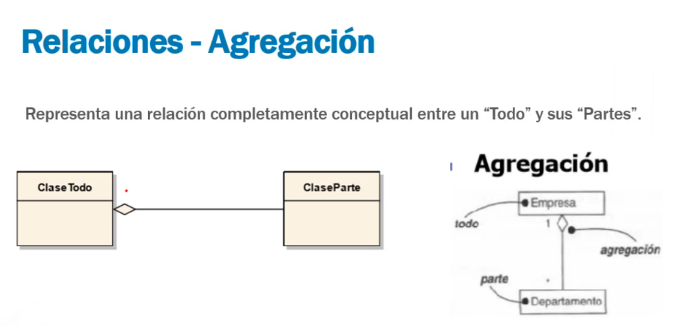

Clases
Clase 1
• La materia trata de metodologías y herramientas de modelado que sirven de base para los
diversos procesos del ciclo de desarrollo de aplicaciones.
• Se busca que el alumno pueda desenvolverse en el marco de un modelo de ciclo de vida de
desarrollo de software, interactuando con otros participantes del proyecto.
• Se busca que el alumno comprenda los principios básicos de la Ingeniería de
requerimientos y reconozca la importancia de su gestión durante el ciclo de vida de un
proyecto de software.
Temática
Presentación de la materia
Metodologías de desarrollo
Requerimientos
Casos de Uso
UML – Diagrama de Clases
Primer Parcial
UML – Diagrama de Clases - Extendido
UML – Diagrama de Secuencia
UML – Diagrama de Estados
Teoría patrones de diseño
Segundo Parcial
paradigma: Periodo de tiempo donde la ciencia evoluciona a partir de teorias aceptadas por el resto, muere cuando un nuevo paradigma nace y un conjunto de cientificos aporta nuevas teorias aceptadas.
Todo es Software: Se empieza a creer software distinto.
¿Que es diseño?
• Es lo que casi todo Técnico quiere hacer!
• Diseñar es el Proceso de desarrollo y creación de un nuevo objeto.
• Es estar con un pie en dos mundos – el de la tecnología y el de los propósitos humanos – que tratan de unificarse.
“Hay dos formas de realizar un diseño. Una es hacerlo tan SIMPLE que sea obvio que no hay deficiencias y la otra es hacerlo tan complicado que no haya deficiencias obvias. El primer método es mucho más difícil” KISS principle Keep It Simple, Stupid”
¿Por que es importante diseñar?
• El diseño es crucial para el éxito del software.
• Agrupa un conjunto de principios, conceptos y prácticas, que llevan al desarrollo de un sistema o producto de alta calidad.
• Es el momento que se establece la calidad, se establece el alcance, el alcance funcional, el formal, el de hardware y el alcance de rendimiento. Tambien influye lo funcional
• Un buen DISEÑO debe ser SIMPLE
Ahora el feedback es más temprano
Clase 2
Introducción
-Modelo en cascada
-Modelo Iterativo o Incremental
-Modelo en Espiral
-Modelo Ágil
El ciclo de vida del desarrollo de software es un modelo aplicado al desarrollo de un PRODUCTO software. Tiene como objetivo encontrar procesos sistemáticos, reproducibles y predecibles que mejoren la productividad y la calidad. Hay varios modelos, cada uno describe un enfoque diferente para distintas actividades que tienen lugar durante todo el proceso.
¿Por qué muere un software?
Porque queda obsoleto
porque el costo de mantenerlo es mayor al de hacer uno nuevo
por obsolescencia tecnologica

El modelo en cascada: Fue uno de los primeros modelos propuestos. Una etapa de desarrollo debe completarse antes de dar comienzo a la siguiente
EL ALCANCE DE UNA APLICACIÓN ES LO QUE ESPERAMOS QUE LA APLICACIÓN HAGA
Primera etapa: Definición de Requerimientos Se realizan consultas a los usuarios y se confecciona un documento técnico con especificaciones del sistema. Se definen Requerimientos Funcionales y No Funcionales. Segunda etapa: Diseño del Sistema y del Software Se establece una arquitectura completa del sistema. En la etapa de diseño del software se identifican y describen las abstracciones del sistema de software y sus relaciones. Tercera etapa: Implementación Durante esta etapa se desarrolla el software y se realizan pruebas unitarias. Cuarta etapa: Integración y prueba del sistema Se buscan sistemáticamente y se corrigen todos los errores antes de ser entregado al usuario final. Quinta etapa: Mantenimiento del sistema El sistema ya se encuentra en funcionamiento. Implica un sostenimiento adecuado para que el software funcione adecuadamente.
Ventajas del modelo • Es un modelo fácil de implementar y entender. • Está orientado a documentos. • Promueve una metodología de trabajo sistemática: Definir antes que diseñar, diseñar antes que codificar Desventajas del modelo • Es rígido. • Poco Flexible. • Es costoso: cualquier error eleva el costo. • Difícil de detectar errores. • Se necesita tener en claro los requerimientos al comienzo del proyecto.
Modelo Iterativo o Incremental Se desarrolla una implementación inicial reducida, y luego se irán agregando funcionalidades en cada iteración. En una iteración se repite un determinado proceso de trabajo que brinda un resultado más completo para un producto final, de forma que quien lo utilice reciba beneficios de este proyecto de manera creciente.
Modelo Iterativo o Incremental Ventajas del Modelo Iterativo Incremental: • Se reduce el tiempo de desarrollo inicial ya que se implementa una funcionalidad parcial. • Si se detecta un error, se desecha la última iteración. • No es necesario tener en claro TODOS los requerimientos al comienzo del proyecto. Desventajas del Modelo Iterativo Incremental: • La entrega temprana de los proyectos produce la creación de sistemas demasiados simples a primera impresión del cliente. • Requiere de un cliente involucrado durante todo el curso del proyecto. • La entrega de un programa que es parcial pero funcional puede hacer vulnerable al programa debido a la falta de robustez en su sistema.
Modelo En espiral
Propuesto originalmente por BOEHM en 1986.
Proporciona el potencial para el desarrollo rápido de versiones incrementales.
El software se desarrolla en una serie de versiones
incrementales.
Se divide en regiones de tareas, las cuales están compuestas por un conjunto de tareas
Determinar de objetivos
Se especifica el alcance que el producto software alcanzará al final de la iteración.
Análisis de riesgos
Se analizan todos los riesgos potenciales que puedan llegar a afectar el desarrollo
del proyecto en el tiempo establecido.
Desarrollar y probar
Comprende las tareas de: análisis, diseño, construcción e implantación del incremento
del producto software.
Planificación
Se realiza un estudio de la situación actual del producto software analizando si es
necesario o no realizar un nuevo incremento. En caso de ser necesario, se planifica
la próxima iteración.
El gráfico de la espiral, el cual aumenta su amplitud con cada incremento, indica que se
construyen sucesivas versiones del producto software.
El modelo en espiral puede adaptarse y aplicarse a lo largo de la vida del producto software.
Una visión alternativa del modelo en espiral puede ser considerada examinando el eje de
punto de entrada en el proyecto.
Ventajas del modelo en espiral ● Para el desarrollo de grandes proyectos, es el mejor modelo. ● Es combinable con otros modelos de desarrollo. ● Se puede implementar en un proyecto con altos grados de incertidumbre. ● El riesgo de detección de errores es bajo. ● Cada error se soluciona en el área correspondiente. Desventajas del modelo en espiral ● Se suma un costo temporal por cada vuelta. ● La comunicación con el usuario debe ser muy fluida. ● En algunos casos es costoso realizar el análisis de riesgos. ● Es complicado planificar el proyecto de manera global, ya que, esto dependerá de la evolución o incrementos del producto software. ● Existe una cierta incertidumbre en cuanto hasta dónde se podrá llegar con el presupuesto inicial.
Ciclo de Deming: Ciclo de calidad continua. Actuar, planear, hacer y verificar.
El modelo predictivo puedo prever cuanto voy a tardar y lo que voy a tener como producto final. En el modelo adaptativo como va cambiando con el feedback no se sabe como va a terminar ni los tiempos de demora.
Modelo Ágil El desarrollo ágil de software utiliza un desarrollo iterativo como base. Se basa en un punto de vista más ligero y centrado en las personas que las soluciones tradicionales. Los modelos ágiles utilizan retroalimentación en lugar de planificación, como principal mecanismo de control.
Valores:
•Individuos e interacciones por encima de procesos y herramientas
•Software funcionando por encima de documentación exhaustiva
•Colaboración con el cliente por encima de negociación contractual
•Respuesta ante el cambio por encima de seguir un plan
Principios:
•Satisfacer al cliente mediante la entrega temprana y continua
•Aprovechar el cambio como ventaja competitiva
•Entregar valor frecuentemente
•Cooperación negocio-desarrolladores durante todo el proyecto
•Construir proyectos en torno a individuos motivados
•Utilizar la comunicación cara a cara
•Software funcionando como medida de progreso
•Promover y mantener un desarrollo sostenible
•La excelencia técnica mejora la agilidad
•La simplicidad es fundamental
•Equipos auto-organizados para generar más valor
•Reflexión y ajustes frecuentes del trabajo de los equipos
Metodología Ágil SCRUM
SCRUM es una de las metodologías ágiles más populares y
utilizadas actualmente en el desarrollo de software.
Permite trabajar colaborativamente en equipos altamente productivos.
Se realizan entregas de software de manera incremental, en tiempos fijos, mediante sprints.
En cada sprint se entrega un incremento de Producto (versión mejorada de la entrega anterior)
Características Principales de Scrum
Flexibilidad y adaptación, productividad y calidad, alineamiento entre cliente y equipo,
Equipo motivado.
Equipos auto-dirigidos y auto-organizados.
Se compone principalmente por: • roles • artefactos • eventos
Roles
Product Owner:
Es la representación del cliente dentro del equipo de trabajo,
su principal responsabilidad es la de expresar claramente la necesidad del cliente dentro del Product Backlog
Dev Team:
Se compone de las personas responsables de desarrollar el producto.
Es un equipo multidisciplinario, autogestionado y organizado.
Scrum Master:
Es el responsable de asegurar que el SCRUM es entendido y realizado por el
equipo ajustandose a la teoría, prácticas y reglas de scrum
Artefactos
Product Backlog:
Es una lista de requerimientos priorizadas, que es administrada por el Product Owner.
Evoluciona a lo largo del proyecto.
Sprint backlog:
Lista de requerimientos para un Sprint. Es administrada por Dev. Team.
Solo el team puede modificarlo.
Eventos
Sprint Planning: • Se define el objetivo del Sprint. • Product Owner presenta requerimientos. • Team estima esfuerzo. • Se genera Sprint Backlog. • Asisten: Scrum Master – Dev Team - Product Owner
ventos
Daily Meeting:
• Duración: 15 minutos.
• Mismo lugar y hora.
• ¿Qué hice ayer? ¿Qué voy a hacer hoy? ¿Qué impedimentos tengo?
• Team actualiza Sprint Backlog.
• Asisten: Dev Team, Scrum Master. El resto es opcional
Eventos
Sprint Review:
• Duración: De 2 a 4 horas.
• Se presenta incremento producto.
• Informal, informativa, se obtiene feedback
• Asisten: Todos
Sprint Retrospective:
• Duración: De 1 a 2 horas.
• Revisión de proceso de trabajo, identificar oportunidades de mejora para el
próximo sprint.
• Asisten: Dev Team, Scrum Master y Product Owner.
Clase 3
Requisitos de Software:
¿Qué es un requisito?
• Características de los requisitos
• Tipos de requisitos
• Requisitos Funcionales
• De Usuario
• De Sistema
• Requisitos No Funcionales
• Del producto
• Organizacionales
• Externos
• Requisitos de Dominio
• Especificación de Requisitos de Software
• Documento de Requisitos: IEEE 830
¿Qué es un requisito?
Una condición o capacidad que debe de ser cumplida por un sistema
o componente de un sistema para satisfacer un contrato, estándar,
especificación u otros documentos impuestos formalmente. (IEEE)
“Un requisito es simplemente una declaración abstracta de alto nivel de un servicio que debe
proporcionar el sistema o una restricción de éste. En el otro extremo, es una definición detallada y
formal de una función del sistema.”(Ian Sommerville)
El alcance es el proposito para el que fue creado.
Un requisito es una funcionalidad del sistema.
Características de los requisitos
Según la IEEE-830 los requisitos deben ser:
• Inequívocos: La redacción debe ser clara para no dar lugar a malas interpretaciones.
• Consistentes: No deben existir contradicciones entre ellos.
• Completos: Todas las entradas posibles y transformaciones deben estar contempladas.
• Alcanzables: deben ser realistas, es decir, debe ser posible su cumplimiento.
• Necesarios: deben conservarse solo aquellos que incidan en la resolución del problema.
• Verificables: debe existir un método claro de verificar su cumplimiento.
• Trazables: se debe poder verificar su historia a lo largo de todo el proyecto.
Tipos de requisitos
1. Requisitos Funcionales
2. Requisitos No Funcionales
3. Requisitos de Dominio
Requisitos Funcionales
Describen las funciones que debe llevar a cabo el software ante determinadas entradas.
Los requerimientos funcionales se expresan en términos de “funciones del sistema”.
Una función del sistema es algo puntual que el sistema debe hacer .
Técnica básica:
Si X es una función del sistema, entonces utilice la frase
“El sistema debe hacer X”.
Ejemplo:
El sistema enviará un correo electrónico al cliente cuando se registre el pago.
Dentro de los Requisitos Funcionales tenemos:
Requisitos del usuario: Están especificados desde el punto de vista del usuario.
Generalmente suelen describirse de forma abstracta.
Requisitos del sistema: Están especificados desde el punto de vista del
sistema.
Los requerimientos del sistema son versiones extendidas de los
Requerimientos del usuario que son utilizados por los ingenieros de software como punto de partida para el diseño del sistema. Agregan detalle y explican como el sistema debe proporcionar los requerimientos del usuario. Deben ser una especificación completa y consistente de un sistema
Requisitos No Funcionales
Los requerimientos no funcionales definen las características o cualidades generales que se
esperan de un sistema y establecen restricciones sobre el producto, el proceso de desarrollo de
software y establecen restricciones externas que el software debe lograr
No hacen referencia a las funciones.
Se enfocan en las propiedades (ej. fiabilidad, tiempos, almacenamiento, calidad, etc.)
Ejemplo:
El sistema debe permitir la realización de 1000 transacciones por segundo.
Un requisito no funcional debe ser medible y verificable. Esta relacionado a la escalabilidad, el mantenimiento, la seguridad, la velocidad, almacenamiento, visibilidad, etc
Del producto
Especifican el comportamiento del producto.
Por ejemplo: La tasa de fallos por minuto del sistema no debe ser superior a dos. (Fiabilidad).
Organizacionales
Se derivan de políticas y procedimientos existentes en la organización.
Ej: se debe seguir el proceso de calidad que marca el estándar ISO 9001. (Estándar).
Externos
se derivan de factores externos al sistema y al proceso de desarrollo, es decir,
como el sistema interactúa con otros sistemas y con otras organizaciones.
Ej: Un operador no tendrá acceso a la dirección del cliente. (Privacidad).
Requisitos de Dominio
Estos requisitos reflejan características del dominio de la aplicación.
Pueden ser FUNCIONALES O NO FUNCIONALES.
Tienen que ver directamente con “las reglas de juego” de la aplicación que se
está construyendo.
La terminología usada es especifica del dominio.
Para los expertos del dominio las especificaciones pueden ser obvias,
no así para los desarrolladores.
Por ej: El alumno no podrá inscribirse a una materia de la cual adeude su correlativa.
Etapas
Priorización
Se definirá para cada requisito funcional (establecido y aprobado en el documento anterior), los recursos que se necesitaran para desarrollar el sistema, el riesgo y el impactode esta forma podrá determinar cuales deberían tener mas importancia y/o hacerse primero.
Validación:
Se revisará que no haya inconsistencias o errores en lo relevado y que se mantengan los estándares de la industria.
Concepción
La etapa de concepción, es un primer acercamiento al
problema, donde se tratara de identificar a los actores y
describir el problema de forma natural.
Indagación
Se deberá verificar que se comprende bien el problema, por
lo se profundizara para definir el alcance.
Elaboración
Se documentará el proceso de análisis para que
posteriormente se pueda realizar el proceso de diseño. Los
documentos mas importantes a registrar son: Especificación
de requerimientos y Casos de Uso.
Especificación de requisitos de Software
Especificación de Requisitos de Software (ERS, SRS):
Documento formal que contiene los requisitos de un sistema.
El estándar IEEE 830-1998 para el SRS(en inglés) o ERS (Especificación de requisitos
de software) es un conjunto de recomendaciones para la especificación de los requisitos de
software que tiene como producto final la documentación de los acuerdos entre el cliente
y el grupo de desarrollo para así cumplir con la totalidad de exigencias estipuladas.
ERS IEEE 830 - 98
1 Introducción
1.1 Propósito
1.2 Ámbito del Sistema
1.3 Definiciones, Acrónimos y Abreviaturas
1.4 Referencias
1.5 Visión general del documento
2 Descripción General
2.1 Perspectiva del Producto
2.2 Funciones del Producto
2.3 Características de los usuarios
2.4 Restricciones
2.5 Suposiciones y Dependencias
2.6 Requisitos Futuros
3 Requisitos Específicos
3.1 Interfaces Externas
3.2 Funciones
3.3 Requisitos de Rendimiento
3.4 Restricciones de Diseño
3.5 Atributos del Sistema
3.6 Otros Requisitos
4 Apéndices 5 Índice
Estructura:
1. Introducción:
1.1 Objetivo:
• Propósito y Audiencia de la ERS
1.2 Ámbito
• ¿Qué hace y qué no hace el producto SW?
1.3 Definiciones, siglas, y abreviaturas
• En forma de apéndices o referencias a otros documentos
1.4 Referencias
• Lista completa de todas las referencias de los documentos en otra parte de la ERS
1.5 Visión Global
• Cómo se organiza el resto de la ERS
2. Descripción General:
2.1 Perspectiva del Producto
• Relación con otros Productos SW del Sistema
- Interfaces Sistema; Usuario; HW; SW; Comunicaciones ..
2.2 Funciones del Producto
• ¿Qué hace y qué no hace el producto SW?
2.3 Características del Usuario
• Formación Académica, Experiencia, Especialización Técnica
2.4 Restricciones Generales
• Regulaciones, Limitaciones de HW, Interfaces
2.5 Asunciones y Dependencias
• Factores que pueden afectar a los requisitos especificados
2.6 Evolución previsible del sistema
• Futuras mejoras que podrían implementarse.
3. Requisitos Específicos:
Contiene todos los requisitos software. Para cada requisito, se debe incluir: • Identificador único
• Descripción de cada entrada (el estímulo) en el sistema. • Cada salida (la contestación) del sistema.
Esta es la parte más grande y más importante del SRS
3.1 Interfaces Externas
Descripción detallada de las entradas y salidas del Sistema SW
Complementa las descripciones de Interfaz de los apartados anteriores
3.2 Funciones (requisitos funcionales)
3.3 Requisitos de Rendimiento/Ejecución
Estáticos y Dinámicos
3.4 Restricciones de Diseño
Impuestas por otros estándares (formato informes; convenciones de nombrado elementos; etc.).
Limitaciones del HW
3.5 Atributos de Calidad del Software
Fiabilidad, Disponibilidad, Mantenibilidad, Seguridad,
3.6 Otros Requisitos
Clase 4
Es un requisito de usuario si es un deseo del usuario, es a alto nivel.
Es un requisito del sistema si está explicado a un nivel mas detallado
¿Qué es un modelo? Un modelo es una simplificación de la realidad.
Principios de modelado El modelado está sujeto a diferentes interpretaciones de la realidad. La realidad es cambiante, por lo que el modelo debe cambiar en consecuencia. El no comprender las notaciones o el proceso puede volver inútil al modelo frente al programador. La formalidad en el modelado es necesaria para su éxito. Los procesos juegan un rol significativo en dirigir las actividades de modelado.
Lenguaje de Modelado Unificado (UML). Es un lenguaje de modelado, de propósito general, usado para la visualización, especificación, construcción y documentación de sistemas Orientados a Objetos. Lenguaje: cuenta con una sintaxis y una semántica. Modelado: Se modelan distintos aspectos del mundo real. Unificado: unifica varias técnicas de modelado. UML da soporte al desarrollo de software pero no especifica qué metodología o proceso usar. UML cuenta con varios tipos de diagramas, los cuales muestran diferentes aspectos de los sistemas que se modelan.
Diagrama de Casos de Uso (CU). Muestra a los actores involucrados en un sistema, las funciones presentes en el sistema y cómo éstas interactúan con dichos actores. Muestra actores, casos de uso, paquetes de casos de uso y sus relaciones.
Solo se diagrama a los actores que interactuan con el sistema.
Caso de uso principal: Lo realiza el actor
Caso de uso abstracto: esta relacionado con otro caso de uso
Extension: extiende la funcionalidad de otro caso de uso, es opcional.
Inclusión: Incluye caso de uso obligatorio
Clase 5 practica
Clase 6: UML
Los metodos en una interfaz son publicos. y sus atributos son final o static
En agregación el todo necesita de las partes, pero las partes pueden existir sin el todo